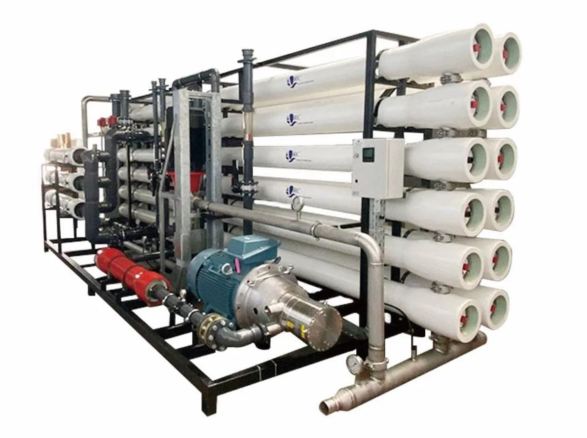

RO oprema za čiščenje vode s finim filtrom
RO oprema za čiščenje vode s finim filtrom: Fini filter + RO; 250-1000 L/h; Mestna vodovodna voda.
Pošlji povpraševanje
RO oprema za čiščenje vode s finim filtrom 250-1000 L/h. Proces obdelave: Fini filter + RO. Pretok čiste vode: 250-1000 L/h. Napajalna voda: Mestna vodovodna voda. Vstopni tlak: 0.1-0.4 MPa. Prilagoditev projektu: Videz, procesni tok, konfiguracijo opreme, krmilno ploščo in zaščitne funkcije je mogoče prilagoditi viru vode in prostoru projekta.
| Postavka | Specifikacija |
|---|---|
| Tip izdelka | RO oprema za čiščenje vode s finim filtrom 250-1000 L/h |
| Način delovanja | Popolnoma avtomatsko inteligentno delovanje z ročnim servisnim načinom po projektu |
| Proces obdelave | Fini filter + RO |
| Pretok čiste vode | 250-1000 L/h |
| Napajalna voda | Mestna vodovodna voda |
| Vstopni tlak | 0.1-0.4 MPa |
| Prilagoditev projektu | Videz, procesni tok, konfiguracijo opreme, krmilno ploščo in zaščitne funkcije je mogoče prilagoditi viru vode in prostoru projekta |
| Uporaba | Hoteli, tovarne, šole, skupnosti, komercialne kuhinje in projekti obdelave vode |
| OEM/ODM | Pretok, črpalka, membrana, rezervoarji, cevi, napetost, jezik plošče in embalaža so prilagodljivi |
| MOQ | Potrdi se glede na kapaciteto, konfiguracijo in OEM raven |
RO oprema za čiščenje vode s finim filtrom: Fini filter + RO; 250-1000 L/h; Mestna vodovodna voda.
| Proces obdelave | Fini filter + RO |
|---|---|
| Napajalna voda | Mestna vodovodna voda |
| Vstopni tlak | 0.1-0.4 MPa |
| Prilagoditev projektu | Videz, procesni tok, konfiguracijo opreme, krmilno ploščo in zaščitne funkcije je mogoče prilagoditi viru vode in prostoru projekta |
Fini filter + RO
250-1000 L/h
Mestna vodovodna voda
0.1-0.4 MPa
Videz, procesni tok, konfiguracijo opreme, krmilno ploščo in zaščitne funkcije je mogoče prilagoditi viru vode in prostoru projekta
RO oprema za čiščenje vode s finim filtrom: Fini filter + RO; 250-1000 L/h; Mestna vodovodna voda.
Pošlji povpraševanje
RO oprema za čiščenje vode s finim filtrom: Fini filter + RO; 250-1000 L/h; Mestna vodovodna voda.
Pošlji povpraševanje
RO oprema za čiščenje vode s finim filtrom: Fini filter + RO; 250-1000 L/h; Mestna vodovodna voda.
Pošlji povpraševanjeRO oprema za čiščenje vode s finim filtrom 250-1000 L/h. Proces obdelave: Fini filter + RO. Pretok čiste vode: 250-1000 L/h. Napajalna voda: Mestna vodovodna voda. Vstopni tlak: 0.1-0.4 MPa. Prilagoditev projektu: Videz, procesni tok, konfiguracijo opreme, krmilno ploščo in zaščitne funkcije je mogoče prilagoditi viru vode in prostoru projekta.